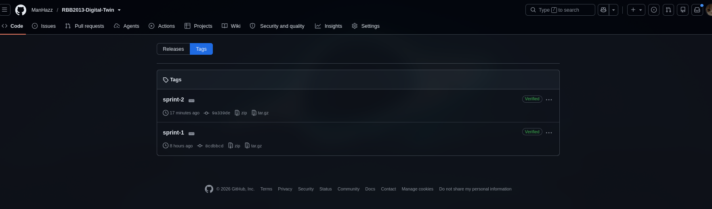
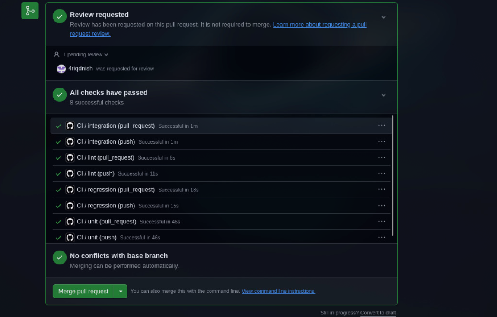

Course: RBB2013 Digital Twin (May 2026) Rubric: Project Development Practices (5%) Repository: https://github.com/ManHazz/RBB2013-Digital-Twin
Team members:
| Name | Student ID | Feature branch |
|---|---|---|
| Muhammad Aiman bin Ahmad Hazimin | 22011708 | feat/integration (integrator) |
| Hazieq Danial bin Roshihan Annuar | 24006633 | feat/nl-command |
| Muhammad Raziq bin Sufian | 24006626 | feat/telemetry-observability |
| Ibrohim bin Ahmad Jaafar Sadzik | 24006396 | feat/dispatcher-actuation |
| Ariq Danish bin Nor Razak | 24006796 | feat/motion-planner |
We split the work by service so each of us owned one microservice end-to-end. Aiman took the integrator role because his branch (feat/integration) has to hold the shared pydantic contracts and the compose file everyone else depends on.
Two sprint cycles were run. Sprint 1 focused on getting each service to exist (scaffold, unit tests, contract rows filled). Sprint 2 focused on getting the services to talk to each other (integration tests, docker compose, CI, persistence proof, scaling demo).
The full atomic task list (one row per commit) is in TASK_ALLOCATION.md. Aiman broke each sprint's work into ~5–8 tiny tasks per person before the sprint started, so nobody had to guess what to do next.
sprint-1, merged in PR #2| Owner | Module | What shipped |
|---|---|---|
| Aiman (22011708) | integration + contracts | Repo scaffold (A-01), pydantic contracts v1.0 (A-02), interface-contracts.md (A-03), sim/extension.py pointer (A-04) |
| Hazieq (24006633) | nl-command | FastAPI service (Hazieq-01), Ollama wire-up (Hazieq-02), unit tests happy + fail (Hazieq-03/04), contract rows (Hazieq-05) |
| Ariq (24006796) | motion-planner | Wrap robot_ik in FastAPI (Ariq-01/02), IK round-trip test (Ariq-03), unreachable + colliding fail tests (Ariq-04/05), contract rows (Ariq-06) |
| Ibrohim (24006396) | dispatcher + actuation | Dispatcher scaffold (Ibrohim-01), 30 fps interpolator + ZMQ (Ibrohim-02), unit tests (Ibrohim-03), actuation service (Ibrohim-04), MQTT unit test (Ibrohim-05), contract rows (Ibrohim-06) |
| Raziq (24006626) | telemetry + persistence | TimescaleDB init.sql (Raziq-01), telemetry service (Raziq-02/03), Timescale + Redis unit tests (Raziq-04/05), contract rows (Raziq-06) |
At the end of sprint 1 we did a group merge — all five feature branches into feat/integration, then a single PR (#2) into main. Two teammates had integration bugs that only showed up once everyone's code was in the same tree, so mid-sprint we wrote FIXES_SPRINT1.md as a paste-and-run cheat sheet for them. Aiman applied Ariq's two Dockerfile fixes directly (commit 17edbc1) since Ariq was blocked on it and the deadline was moving.
sprint-2, merged in PR #3| Owner | Module | What shipped |
|---|---|---|
| Aiman (22011708) | compose + system test + integration hotfixes + submission docs | docker-compose.yml + mosquitto config (A-06), full-stack system test (A-07), 4 rubric-artifact notebooks + supporting reports, ~10 integration hotfixes found in live smoke test |
| Hazieq (24006633) | CI + regression | Integration test nl→planner (Hazieq-06), CI pipeline lint/unit/integration/regression (Hazieq-07), golden IK regression suite (Hazieq-08) |
| Ariq (24006796) | scaling + integration | Integration test planner→dispatcher (Ariq-07), nginx round-robin config + SCALING_PROOF.md (Ariq-08) |
| Ibrohim (24006396) | integration | Integration test actuation→mosquitto against real broker via testcontainers (Ibrohim-07) |
| Raziq (24006626) | integration + Grafana + persistence | Integration test sim→telemetry (Raziq-07), Grafana provisioning + dashboard JSON (Raziq-08), persistence proof procedure and screenshots (Raziq-09) |
Sprint 2 also had a smaller group merge story: PR #2 landed most of the sprint-2 code, but the live smoke test caught about ten integration bugs (see §3 below), so we opened PR #3 with all the hotfixes bundled and merged it as the sprint-2 endpoint. Tag sprint-2 on that merge commit.
Hazieq-06:, Raziq-08:), so git log reads like the sprint plan.services/shared/schemas.py is frozen. Only Aiman edits it; otherwise every service could disagree on a field and the whole chain breaks silently.main. All changes go into feat/integration first, then a single group PR into main per sprint boundary.sprint-1 sits on the sprint-1 merge commit. sprint-2 sits on the PR #3 merge commit. Both tags are pushed.Both sprints ended with a real group merge PR into main, not a series of individual PRs. GitHub shows "5 contributors" on both merged PRs — which is the visible evidence that everyone actually authored commits that landed on main.


Every module has its own unit tests. Every service pair has an integration test. There's one system test that hits the whole stack.
The rubric asks for both — a test that proves the happy path works, AND a test that proves the service rejects bad input correctly.
| Module | Test file | Passing case | Failing case (proves rejection) |
|---|---|---|---|
| nl-command | tests/unit/test_nl_command.py |
Valid LLM completion → correct pose | Empty text → HTTP 422; garbled LLM output → HTTP 422 |
| motion-planner | tests/unit/test_motion_planner.py |
IK round-trip within 1e-3 rad | Unreachable target → reachable=false; colliding → collision_free=false |
| dispatcher | tests/unit/test_dispatcher.py |
30 frames sent; first + last correct | — |
| actuation | tests/unit/test_actuation.py |
Correct MQTT topic and payload published | Wrong joint count in request → HTTP 422 |
| telemetry | tests/unit/test_telemetry.py |
Row inserted in Timescale; state:latest SET in Redis |
— |
We deliberately avoided mocking the DB and MQTT broker in the integration tier. testcontainers spins up a real Postgres / Redis / Mosquitto per test so the test actually exercises the wire format.
| Pair | Test file | Real infrastructure |
|---|---|---|
| nl-command → motion-planner | tests/integration/test_nl_to_planner.py |
Live TestClient chain (Ollama stubbed only because the LLM output is non-deterministic) |
| motion-planner → dispatcher | tests/integration/test_planner_to_dispatcher.py |
Live TestClient chain, ZMQ socket mocked |
| actuation → mosquitto | tests/integration/test_actuation_mqtt.py |
testcontainers spawns real eclipse-mosquitto:2 |
| sim state → Timescale + Redis | tests/integration/test_sim_to_telemetry.py |
testcontainers spawns real Timescale + Redis |
tests/system/test_end_to_end.py — brings up the full compose stack, POSTs /command, and asserts that a robot_state row lands in TimescaleDB within 10 seconds.
tests/regression/test_golden_ik.py — a fixed set of target poses paired with the expected reachable and collision_free results. If anyone changes robot_ik.py in a way that drifts the IK output, the regression CI job goes red. This runs on every push, not just merges.
.github/workflows/ci.yml runs on every push and every pull request. The jobs chain: lint → unit → integration → regression. Any job failing fails the whole build.
ruff — style errors, unused imports, unsorted imports.pytest tests/unit, fast, no infrastructure needed.All 8 checks passed on the sprint-2 hotfix PR (4 workflow jobs × 2 triggers per PR: push and pull_request). This is the automatic build + automatic regression test loop the rubric wants.
| Artifact | Link |
|---|---|
| Sprint 1 tag | https://github.com/ManHazz/RBB2013-Digital-Twin/releases/tag/sprint-1 |
| Sprint 2 tag | https://github.com/ManHazz/RBB2013-Digital-Twin/releases/tag/sprint-2 |
| Sprint 1 merge PR | https://github.com/ManHazz/RBB2013-Digital-Twin/pull/2 |
| Sprint 2 hotfix PR | https://github.com/ManHazz/RBB2013-Digital-Twin/pull/3 |
| CI runs | https://github.com/ManHazz/RBB2013-Digital-Twin/actions |
| Task allocation | https://github.com/ManHazz/RBB2013-Digital-Twin/blob/main/TASK_ALLOCATION.md |
| Sprint log | https://github.com/ManHazz/RBB2013-Digital-Twin/blob/main/docs/SPRINT_LOG.md |
| Rubric requirement | Where it's satisfied |
|---|---|
| Sprint planning + execution with per-teammate deliverables | §1 (both sprint tables with student IDs) + TASK_ALLOCATION.md |
| At least 2 sprint cycles | §1 (sprint 1 + sprint 2 both tagged, both merged) |
| Consistent version control + individual + group merge | §2 (one branch per person, sprint tags, group PRs #2 and #3) |
| Unit + interface/integration tests for each module | §3.1 + §3.2 (per-module unit; per-pair integration) |
| Pass AND fail cases demonstrated | §3.1 (fail-case column is populated for every module that has rejection logic) |
| System tests | §3.3 (test_end_to_end.py) |
| Automatic build + regression test suite | §4 (.github/workflows/ci.yml chained lint → unit → integration → regression on every push) |
| For all modules of the system | §1 (every teammate authored commits in both sprints, across every module) |